Afin que le moteur de recherche puisse indexer la page on doit lui soumettre le site en remplissant le formulaire de
soumission.
• La demande de soumission est en suite traitée par des humains et c’est eux qui décident d’accepter ou refuser le site
soumis en se basant sur les normes relatifs à l’outil de
recherche concerné.
• Une fois la demande acceptée, le robot du moteur de
recherche se charge de traiter le reste des pages du site en
collectant les informations nécessaires.
• A partir de ce stade le positionnement du site est devenu
automatique et c’est le robot qui le décide.
Les techniques de référencement naturelles
• Un site bien optimisé est sans doute mieux positionné auprès des moteurs de recherche car ceux-ci arrivent à lire son contenu plus facilement.
• Par conséquent, c’est le travail d’optimisation du code qui est le plus récompensé par les outils de recherches.
• Profiter au maximum des titres, pour cela il faut :
• Mettre un titre de page sur toutes les pages du site web.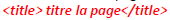
• Placer des titres différents sur chaque page.
• Il faut veiller à ce que les titres des pages web soient pertinents et contiennent des mots intéressants
• Veiller à ce que chaque titre fasse 70 caractères au maximum.
• Dans ces balises meta on précise :
– La description : permet de décrire le contenu d’une page web par un court texte qui apparaît dans les pages de résultats des outils de
recherche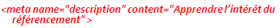
– Les mots clés (Keywords) : permettent de décrire le contenu d’une page web par une liste de mots clés
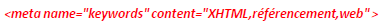
• Les balises META (ou Meta-tags) servent à dialoguer avec les moteurs de recherche, elles représentent un facteur-clé de succès de référencement.
• Les balises META sont déclarées dans l’entête du fichier HTML.
• Les métas HTTP-EQUIV, permettent d'envoyer des informations supplémentaires au navigateur via le protocole HTTP :
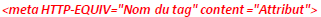
• Les métas NAME, permettent de décrire la page HTML :
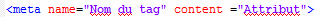
– Robot : qui permet de spécifier le comportement du moteur de recherche à la rencontre de la page (indexation, suivi de liens…)
Les moteurs de recherche font appel à des robots qui recherchent les nouvelles pages du web.
Solution 1 : Créer un fichier texte (ex robots.txt), placé au racine du serveur, dans lequel préciser :
User-agent :Correspond au nom du robot indexeur
Disallow : Permet de restreindre l’accès des robots au site
Son adresse d’accès est ww. …. /robots.txt qui remplacera l’adresse du site. Lorsqu’un moteur visite le site, il consultera automatiquement le fichier robots.txt
Exemple : Si on ne souhaite autoriser qu’un seul indexeur,comme GoogleBot (le moteur de recherche de google) :
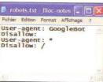
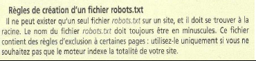
– Author: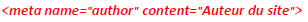
Cette balise indique l’auteur du site Web. Plusieurs auteurs sont possibles, il faut juste les séparer par des virgules.
– Catergory:
Indique la catégorie dont la page fait partie. Utile pour les annuaires de recherche thématiques. Plusieurs catégories sont possibles, il faut juste les séparer par des virgules.
– Reply-to:
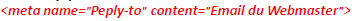
Indique l’adresse Email du Webmaster. Elle peut être utile pour les outils de recherche. Cependant les spammers vont récupérer cette
adresse Mail pour lui envoyer un grand nombre de Spams.
Solution 2 :utiliser la métabalise :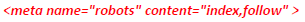
index : indique que le robot doit référencer cee page ≠ noindex
follow : indique que le robot doit également suivre les liens à l’intérieur de cee page ≠ nofollow
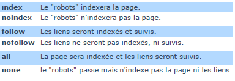
– Copyright:
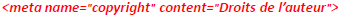
Indique les droits de l’auteur du site Web. Plusieurs auteurs sont possibles, séparés par des virgules.
– Language:
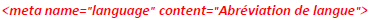
Indique la langue principale de la page exprimé sur deux lettres (fr pour le français par exemple). Elle n’est pas prise en charge par
les moteurs de recherche actuels.
– Publisher:
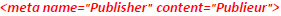
Elle indique le nom de la personne qui a publié la page. Elle est pris en compte par Google pour estimer la pertinence de la page.
– Revisit-after: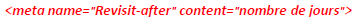
Indique au robot du moteur de recherche le délai entre deux visites successives de la page. Pourtant elle est jugée inutile
vu que les moteurs actuels ne la prennent pas en charge.
– Googlebot: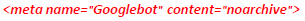
Cette balise interdit à Google de mettre la page en cache.